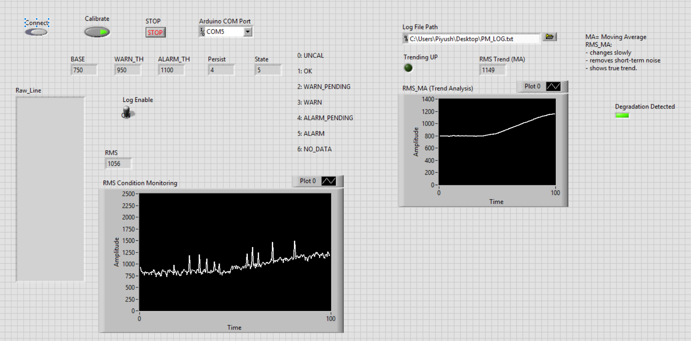

Project Case Study · Dec 2025 – Feb 2026
AI-Assisted Predictive Maintenance System
A setup that watches a motor and warns you before it breaks. Sensors pick up vibration, current, and temperature, an Arduino gathers the readings, LabVIEW shows them live and logs them, and a machine learning model trained on healthy and faulty runs decides whether the motor looks fine or not. It is a bench-sized version of the condition monitoring used on real plant equipment.

The idea
When a motor is about to fail, it usually tells you first. The vibration creeps up, it draws more current, it runs hotter. Predictive maintenance is about catching those early signs so you can plan a fix instead of getting caught out by a breakdown. I wanted to build a working version of that whole chain on a small motor: sense it, show it, and let it decide when something looks off.
What it measures
Three sensors watch the motor. An MPU6050 accelerometer feels the vibration, an ACS712 sensor reads how much current the motor is pulling, and a temperature sensor tracks how warm it gets. An Arduino reads all three and sends the numbers to the computer over USB. Raw vibration is noisy and jumpy, so I boil it down to a couple of simple measures, mainly its RMS, which is a good stand-in for overall vibration energy, plus a smoothed average so a single bump does not look like trouble.
Watching it live in LabVIEW
LabVIEW is the dashboard. It reads the sensor stream, shows the live vibration, current, and temperature, plots the trends, and logs everything to CSV files so I can go back and compare a healthy run against a faulty one. It also runs a simple rule based check: it learns what normal looks like, then flags a warning once vibration climbs past about 1.4 times that baseline and an alarm past about 1.9 times, with a short delay so a bit of noise does not trip it.
Adding the AI layer
The rule based check works, but it leans on limits I pick by hand. To make it smarter, I recorded the motor running normally and running with a deliberate imbalance, labelled each run as healthy or faulty, and trained a Random Forest model in Python on those examples. Now the model looks at the whole picture, vibration, current, and temperature together, and calls the motor healthy or faulty with a confidence number. LabVIEW and Python pass data back and forth through a shared CSV file, so the live dashboard can show the model's verdict right next to the regular readings.
What this shows
It brings together two halves that usually sit apart: the hands on instrumentation side, with real sensors, a live dashboard, and sensible alarms, and the data side, with logging, features, and a trained model. The same idea scales straight up to the pumps, fans, and motors that predictive maintenance programs watch in real buildings and plants.